Photos, health, books, trips and daily notes, treated as data you own and can query. Newest first.
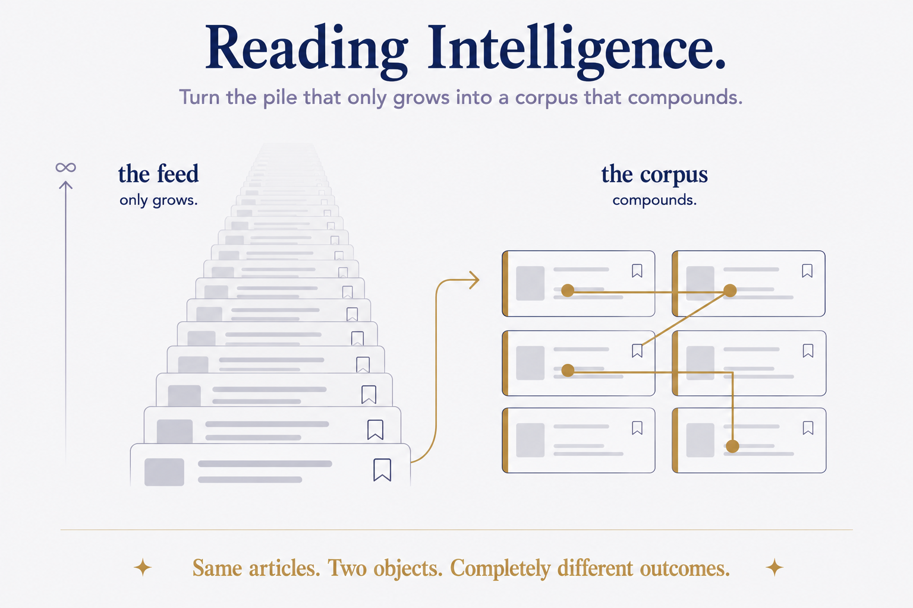
For knowledge workersYour reading history is already a dataset. Stop treating it as a queue and it will tell you what you think.
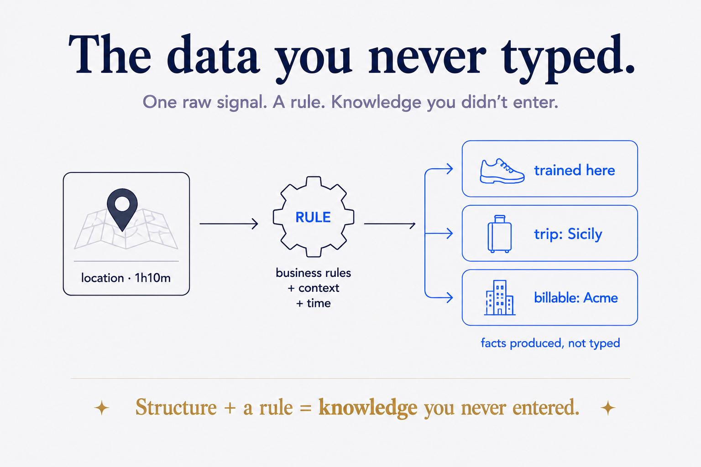
For knowledge workersThe most valuable facts about your life are the ones you never wrote down — they're inferred. And you don't need an ontology, a triple-store, or RDF to get them. You need structure and a handful of rules. This is what reasoning actually looks like on your own data.
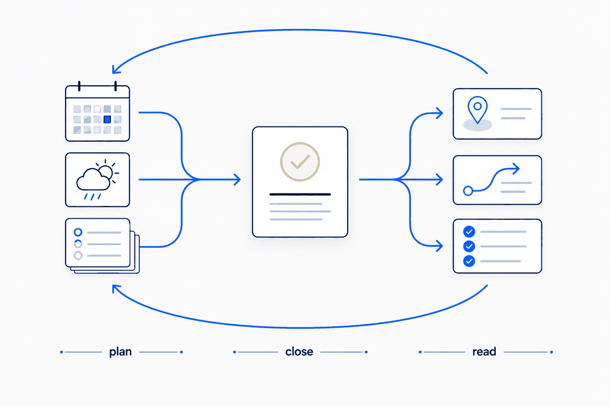
For knowledge workersPlanning ahead, closing the day, and reading back what actually happened — three moves an AI can run for you, but only if the structure underneath is real.
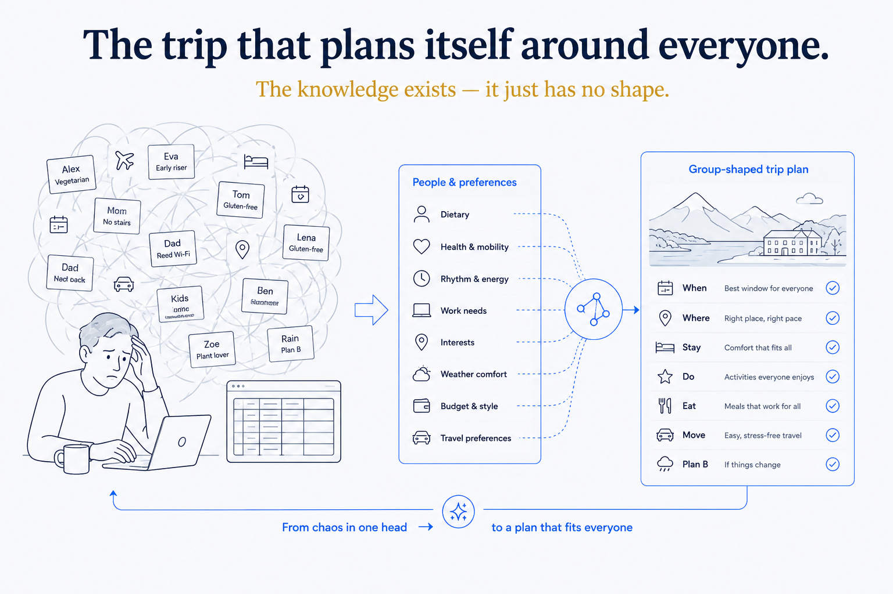
For builders & teamsI built a trip planner for me and my sister: interests in, anti-interests out, a plan ranked by what we actually like, filtering the 642 places we've already been. It ran two real trips — 8 days in Sicily, 18 in the Verdon. Then it hit me that this is somebody's job — and most people do it in their head, badly.
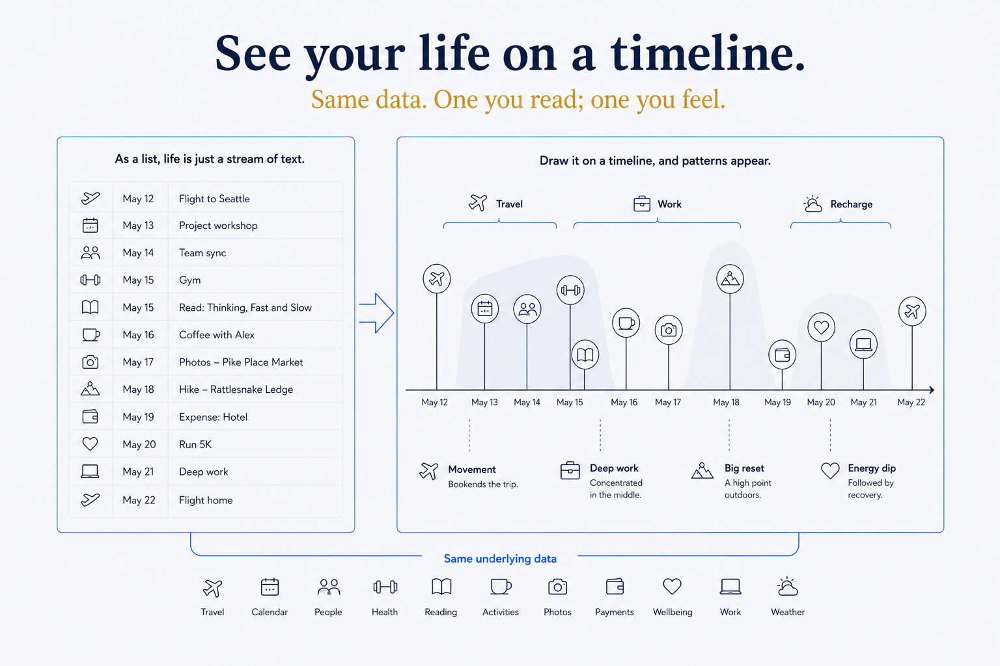
For knowledge workersA structured life is queryable — but a query is a list, and a list doesn't make you feel anything. The moment I asked Claude to draw my timeline instead of listing it, the structure I'd been building for years suddenly became something I could see. Here's how to turn a well-shaped vault into a picture.
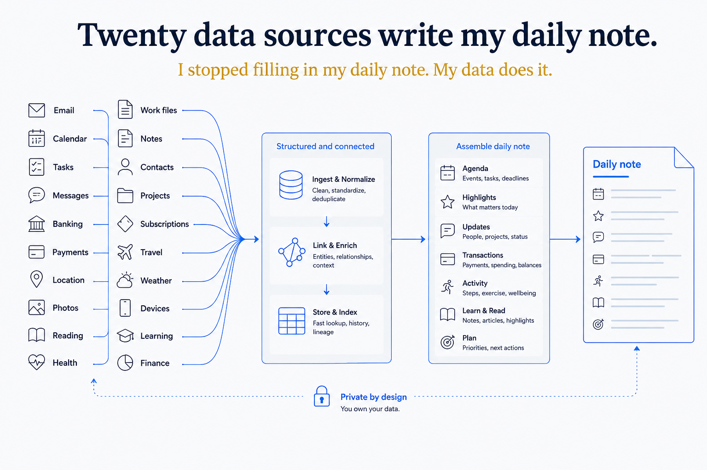
For knowledge workersA daily note that you have to fill in by hand is a chore you'll abandon by February. So I stopped filling mine in. Twenty-odd data sources — mail, calendar, banking, location, photos, reading, health — write it for me. Here's the actual machinery, not the pitch.
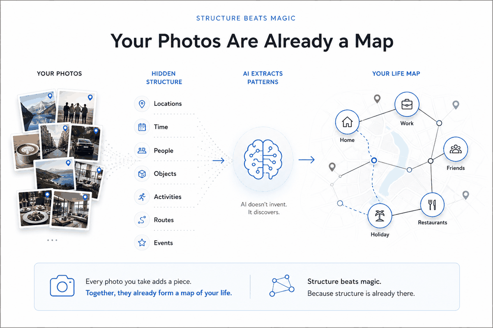
For knowledge workersI turned 155,000 photos into a queryable, geo-indexed library. The work wasn't taking pictures. It was reading the metadata I already had.
For knowledge workersI turned 271 books I own into 13.8 million words of queryable text. The work wasn't reading. It was extraction.
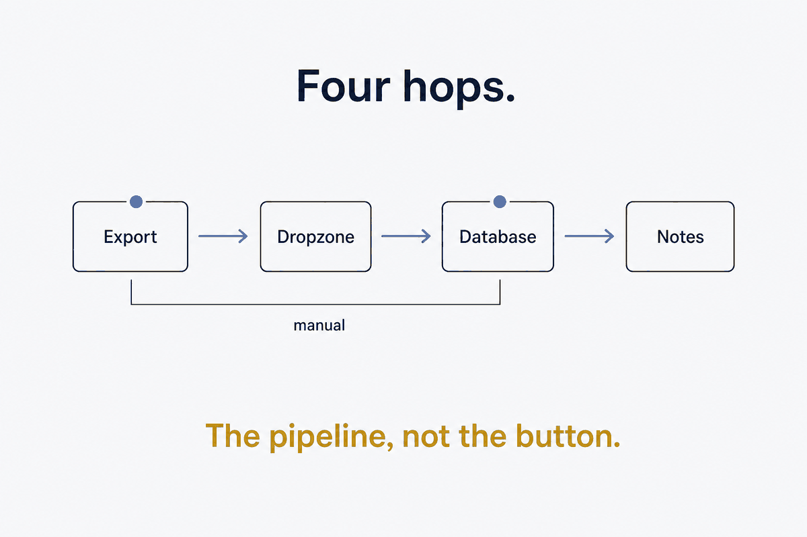
For builders & teamsEvery app has a 'Download your data' button buried in settings. Most people press it once and forget. Here's the dropzone-and-routing pipeline that turns it into a routine your notes consume.
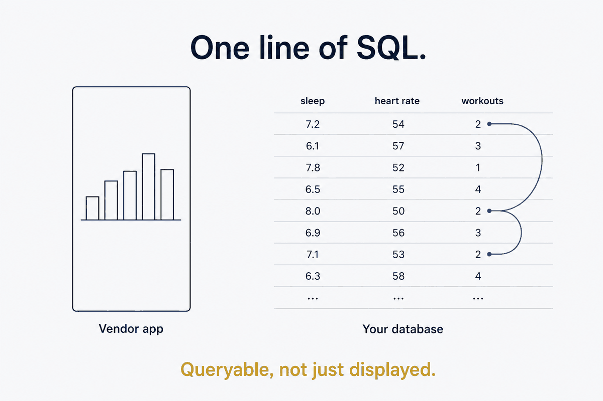
For builders & teamsYour watch collects excellent data and shows it badly. Export it once, land it in a local database you own, and the questions the vendor app can't answer become one line of SQL.
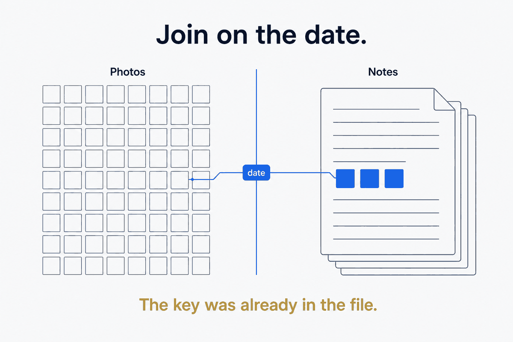
For knowledge workersYour photo library is organized for finding. Your daily-notes are where remembering happens. Join them on the one key they already share — the date — and the daily-note becomes a memory-page.
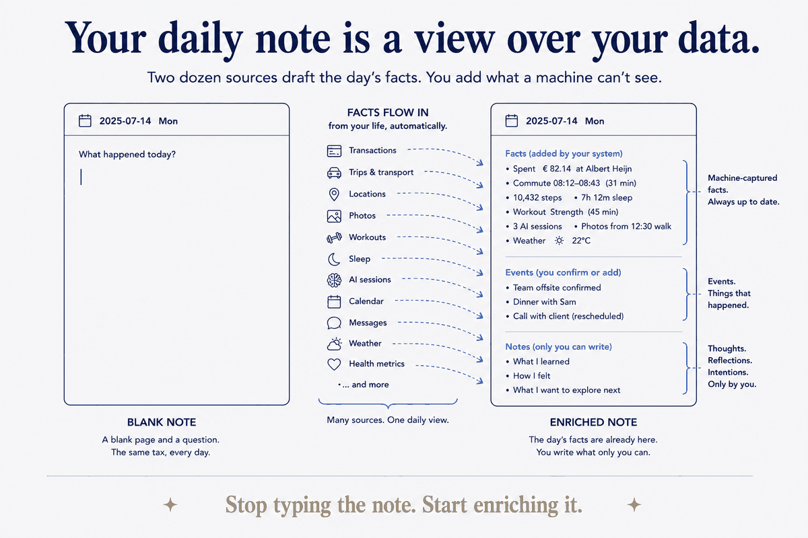
For knowledge workersMy daily-note isn't typed from a blank page — it's enriched. Two dozen sources pour the day's facts in every morning, and I add only what a machine can't see.